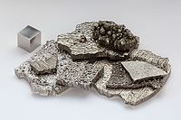

Numero atomico: 27
Massa atomica: 58,93
Temperatura di fusione (°C): 1495
Temperatura di ebolizione (°C): 2927
Energia di prima ionizzazione (kj/mol): 758
Elettronegatività (secondo Pauling): 1,88
Densità: 8,80
Numeri di ossidazione: +2+3
Configurazione elettronica: 1s2, 2s2, 2p6, 3s2, 3p6, 3d7, 4s2
Maggiori Informazioni